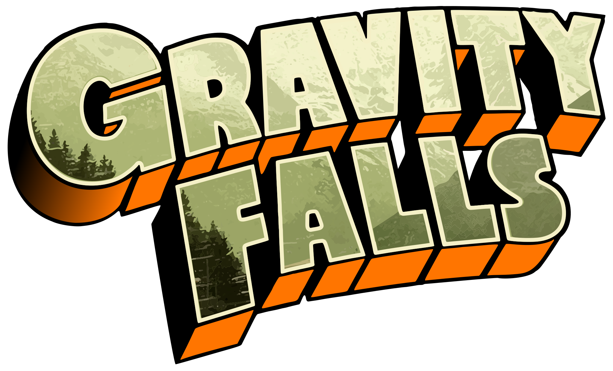

Gravity Falls Cipher Decoder
Load Episode Message:
A1Z26 Cipher (Digitize)
This cipher converts numbers into letters. As the name suggests, A=1, B=2... Z=26.
Enable A1Z26Ceasar Cipher (Shift)
A Ceasar or Shift Cipher works by shifting all the letters of the text a given amount. Select the shift amount to recompute the text.
Enable CeasarAtbash (Reverse)
The Atbash Cipher uses a reversed alphabet.
Enable Atbash/ReversedVigenère
Vigenère Ciphers use a (repeated) keyword to indicate how much to shift a letter over, like a Ceasar Cipher.
Enable VigenèreKey: